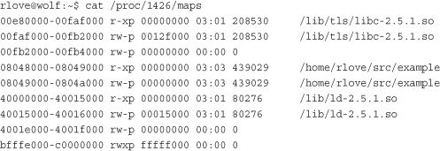

Chapter 12, “Memory Management,” looked at how the kernel manages physical memory. In addition to managing its own memory, the kernel also has to manage the memory of user-space processes. This memory is called the process address space, which is the representation of memory given to each user-space process on the system. Linux is a virtual memory operating system, and thus the resource of memory is virtualized among the processes on the system. An individual process’s view of memory is as if it alone has full access to the system’s physical memory. More important, the address space of even a single process can be much larger than physical memory. This chapter discusses how the kernel manages the process address space.
The process address space consists of the virtual memory addressable by a process and the addresses within the virtual memory that the process is allowed to use. Each process is given a flat 32- or 64-bit address space, with the size depending on the architecture. The term flat denotes that the address space exists in a single range. (For example, a 32-bit address space extends from the address 0 to 4294967295.) Some operating systems provide a segmented address space, with addresses existing not in a single linear range, but instead in multiple segments. Modern virtual memory operating systems generally have a flat memory model and not a segmented one. Normally, this flat address space is unique to each process. A memory address in one process’s address space is completely unrelated to that same memory address in another process’s address space. Both processes can have different data at the same address in their respective address spaces. Alternatively, processes can elect to share their address space with other processes. We know these processes as threads.
A memory address is a given value within the address space, such as 4021f000. This particular value identifies a specific byte in a process’s 32-bit address space. Although a process can address up to 4GB of memory (with a 32-bit address space), it doesn’t have permission to access all of it. The interesting part of the address space is the intervals of memory addresses, such as 08048000-0804c000, that the process has permission to access. These intervals of legal addresses are called memory areas. The process, through the kernel, can dynamically add and remove memory areas to its address space.
The process can access a memory address only in a valid memory area. Memory areas have associated permissions, such as readable, writable, and executable, that the associated process must respect. If a process accesses a memory address not in a valid memory area, or if it accesses a valid area in an invalid manner, the kernel kills the process with the dreaded “Segmentation Fault” message.
Memory areas can contain all sorts of goodies, such as
• A memory map of the executable file’s code, called the text section.
• A memory map of the executable file’s initialized global variables, called the data section.
• A memory map of the zero page (a page consisting of all zeros, used for purposes such as this) containing uninitialized global variables, called the bss section.1
1 The term “BSS” is historical. It stands for block started by symbol. Uninitialized variables are not stored in the executable object because they do not have any associated value. But the C standard decrees that uninitialized global variables are assigned certain default values (basically, all zeros), so the kernel loads the variables (without value) from the executable into memory and maps the zero page over the area, thereby giving the variables the value zero, without having to waste space in the object file with explicit initializations.
• A memory map of the zero page used for the process’s user-space stack. (Do not confuse this with the process’s kernel stack, which is separate and maintained and used by the kernel.)
• An additional text, data, and bss section for each shared library, such as the C library and dynamic linker, loaded into the process’s address space.
• Any memory mapped files.
• Any shared memory segments.
• Any anonymous memory mappings, such as those associated with
malloc().2
2
Newer versions of glibc implement
malloc()
via
mmap(), in addition to
brk().
All valid addresses in the process address space exist in exactly one area; memory areas do not overlap. As you can see, there is a separate memory area for each different chunk of memory in a running process: the stack, object code, global variables, mapped file, and so on.
The kernel represents a process’s address space with a data structure called the memory descriptor. This structure contains all the information related to the process address space. The memory descriptor is represented by struct mm_struct and defined in <linux/mm_types.h>. Let’s look at the memory descriptor, with comments added describing each field:
The mm_users field is the number of processes using this address space. For example, if two threads share this address space, mm_users is equal to two. The mm_count field is the primary reference count for the mm_struct. All mm_users equate to one increment of mm_count. Thus, in the previous example, mm_count is only one. If nine threads shared an address space, mm_users would be nine, but again mm_count would be only one. Only when mm_users reaches zero (when all threads using an address space exit) is mm_count decremented. When mm_count finally reaches zero, there are no remaining references to this mm_struct, and it is freed. When the kernel operates on an address space and needs to bump its associated reference count, the kernel increments mm_count. Having two counters enables the kernel to differentiate between the main usage counter (mm_count) and the number of processes using the address space (mm_users).
The mmap and mm_rb fields are different data structures that contain the same thing: all the memory areas in this address space. The former stores them in a linked list, whereas the latter stores them in a red-black tree. A red-black tree is a type of binary tree; like all binary trees, searching for a given element is an O(log n) operation. For further discussion on red-black trees, see “Lists and Trees of Memory Areas,” later in this chapter.
Although the kernel would normally avoid the extra baggage of using two data structures to organize the same data, the redundancy comes in handy here. The mmap data structure, as a linked list, allows for simple and efficient traversing of all elements. On the other hand, the mm_rb data structure, as a red-black tree, is more suitable to searching for a given element. Memory areas are discussed in more detail later in this chapter. The kernel isn’t duplicating the mm_struct structures; just the containing objects. Overlaying a linked list onto a tree, and using both to access the same set of data, is sometimes called a threaded tree.
All of the mm_struct structures are strung together in a doubly linked list via the mmlist field. The initial element in the list is the init_mm memory descriptor, which describes the address space of the init process. The list is protected from concurrent access via the mmlist_lock, which is defined in kernel/fork.c.
The memory descriptor associated with a given task is stored in the mm field of the task’s process descriptor. (The process descriptor is represented by the task_struct structure, defined in <linux/sched.h>.) Thus, current->mm is the current process’s memory descriptor. The copy_mm() function copies a parent’s memory descriptor to its child during fork(). The mm_struct structure is allocated from the mm_cachep slab cache via the allocate_mm() macro in kernel/fork.c. Normally, each process receives a unique mm_struct and thus a unique process address space.
Processes may elect to share their address spaces with their children by means of the CLONE_VM flag to clone(). The process is then called a thread. Recall from Chapter 3, “Process Management,” that this is essentially the only difference between normal processes and so-called threads in Linux; the Linux kernel does not otherwise differentiate between them. Threads are regular processes to the kernel that merely share certain resources.
In the case that CLONE_VM is specified, allocate_mm() is not called, and the process’s mm field is set to point to the memory descriptor of its parent via this logic in copy_mm():
When the process associated with a specific address space exits, the exit_mm(), defined in kernel/exit.c, function is invoked. This function performs some housekeeping and updates some statistics. It then calls mmput(), which decrements the memory descriptor’s mm_users user counter. If the user count reaches zero, mmdrop() is called to decrement the mm_count usage counter. If that counter is finally zero, the free_mm() macro is invoked to return the mm_struct to the mm_cachep slab cache via kmem_cache_free(), because the memory descriptor does not have any users.
mm_struct and Kernel ThreadsKernel threads do not have a process address space and therefore do not have an associated memory descriptor. Thus, the mm field of a kernel thread’s process descriptor is NULL. This is the definition of a kernel thread—processes that have no user context.
This lack of an address space is fine because kernel threads do not ever access any user-space memory. (Whose would they access?) Because kernel threads do not have any pages in user-space, they do not deserve their own memory descriptor and page tables. (Page tables are discussed later in the chapter.) Despite this, kernel threads need some of the data, such as the page tables, even to access kernel memory. To provide kernel threads the needed data, without wasting memory on a memory descriptor and page tables, or wasting processor cycles to switch to a new address space whenever a kernel thread begins running, kernel threads use the memory descriptor of whatever task ran previously.
Whenever a process is scheduled, the process address space referenced by the process’s mm field is loaded. The active_mm field in the process descriptor is then updated to refer to the new address space. Kernel threads do not have an address space and mm is NULL. Therefore, when a kernel thread is scheduled, the kernel notices that mm is NULL and keeps the previous process’s address space loaded. The kernel then updates the active_mm field of the kernel thread’s process descriptor to refer to the previous process’s memory descriptor. The kernel thread can then use the previous process’s page tables as needed. Because kernel threads do not access user-space memory, they make use of only the information in the address space pertaining to kernel memory, which is the same for all processes.
The memory area structure, vm_area_struct, represents memory areas. It is defined in <linux/mm_types.h>. In the Linux kernel, memory areas are often called virtual memory areas (abbreviated VMAs).
The vm_area_struct structure describes a single memory area over a contiguous interval in a given address space. The kernel treats each memory area as a unique memory object. Each memory area possesses certain properties, such as permissions and a set of associated operations. In this manner, each VMA structure can represent different types of memory areas—for example, memory-mapped files or the process’s user-space stack. This is similar to the object-oriented approach taken by the VFS layer (see Chapter 13). Here’s the structure, with comments added describing each field:
Recall that each memory descriptor is associated with a unique interval in the process’s address space. The vm_start field is the initial (lowest) address in the interval, and the vm_end field is the first byte after the final (highest) address in the interval. That is, vm_start is the inclusive start, and vm_end is the exclusive end of the memory interval. Thus, vm_end – vm_start is the length in bytes of the memory area, which exists over the interval [vm_start, vm_end). Intervals in different memory areas in the same address space cannot overlap.
The vm_mm field points to this VMA’s associated mm_struct. Note that each VMA is unique to the mm_struct with which it is associated. Therefore, even if two separate processes map the same file into their respective address spaces, each has a unique vm_area_struct to identify its unique memory area. Conversely, two threads that share an address space also share all the vm_area_struct structures therein.
The vm_flags field contains bit flags, defined in <linux/mm.h>, that specify the behavior of and provide information about the pages contained in the memory area. Unlike permissions associated with a specific physical page, the VMA flags specify behavior for which the kernel is responsible, not the hardware. Furthermore, vm_flags contains information that relates to each page in the memory area, or the memory area as a whole, and not specific individual pages. Table 15.1 is a listing of the possible vm_flags values.
Table 15.1. vm_flags
Let’s look at some of the more important and interesting flags in depth. The VM_READ, VM_WRITE, and VM_EXEC flags specify the usual read, write, and execute permissions for the pages in this particular memory area. They are combined as needed to form the appropriate access permissions that a process accessing this VMA must respect. For example, the object code for a process might be mapped with VM_READ and VM_EXEC but not VM_WRITE. On the other hand, the data section from an executable object would be mapped VM_READ and VM_WRITE, but VM_EXEC would make little sense. Meanwhile, a read-only memory mapped data file would be mapped with only the VM_READ flag.
The VM_SHARED flag specifies whether the memory area contains a mapping that is shared among multiple processes. If the flag is set, it is intuitively called a shared mapping. If the flag is not set, only a single process can view this particular mapping, and it is called a private mapping.
The VM_IO flag specifies that this memory area is a mapping of a device’s I/O space. This field is typically set by device drivers when mmap() is called on their I/O space. It specifies, among other things, that the memory area must not be included in any process’s core dump. The VM_RESERVED flag specifies that the memory region must not be swapped out. It is also used by device driver mappings.
The VM_SEQ_READ flag provides a hint to the kernel that the application is performing sequential (that is, linear and contiguous) reads in this mapping. The kernel can then opt to increase the read-ahead performed on the backing file. The VM_RAND_READ flag specifies the exact opposite: that the application is performing relatively random (that is, not sequential) reads in this mapping. The kernel can then opt to decrease or altogether disable read-ahead on the backing file. These flags are set via the madvise() system call with the MADV_SEQUENTIAL and MADV_RANDOM flags, respectively. Read-ahead is the act of reading sequentially ahead of requested data, in hopes that the additional data will be needed soon. Such behavior is beneficial if applications are reading data sequentially. If data access patterns are random, however, read-ahead is not effective.
The vm_ops field in the vm_area_struct structure points to the table of operations associated with a given memory area, which the kernel can invoke to manipulate the VMA. The vm_area_struct acts as a generic object for representing any type of memory area, and the operations table describes the specific methods that can operate on this particular instance of the object.
The operations table is represented by struct vm_operations_struct and is defined in <linux/mm.h>:
•
void open(struct vm_area_struct *area)
This function is invoked when the given memory area is added to an address space.
•
void close(struct vm_area_struct *area)
This function is invoked when the given memory area is removed from an address space.
•
int fault(struct vm_area_sruct *area, struct vm_fault *vmf)
This function is invoked by the page fault handler when a page that is not present in physical memory is accessed.
•
int page_mkwrite(struct vm_area_sruct *area, struct vm_fault *vmf)
This function is invoked by the page fault handler when a page that was read-only is being made writable.
•
int access(struct vm_area_struct *vma, unsigned long address, void
*buf, int len, int write)
This function is invoked by
access_process_vm()whenget_user_pages()fails.
As discussed, memory areas are accessed via both the mmap and the mm_rb fields of the memory descriptor. These two data structures independently point to all the memory area objects associated with the memory descriptor. In fact, they both contain pointers to the same vm_area_struct structures, merely represented in different ways.
The first field, mmap, links together all the memory area objects in a singly linked list. Each vm_area_struct structure is linked into the list via its vm_next field. The areas are sorted by ascending address. The first memory area is the vm_area_struct structure to which mmap points. The last structure points to NULL.
The second field, mm_rb, links together all the memory area objects in a red-black tree. The root of the red-black tree is mm_rb, and each vm_area_struct structure in this address space is linked to the tree via its vm_rb field.
A red-black tree is a type of balanced binary tree. Each element in a red-black tree is called a node. The initial node is called the root of the tree. Most nodes have two children: a left child and a right child. Some nodes have only one child, and the final nodes, called leaves, have no children. For any node, the elements to the left are smaller in value, whereas the elements to the right are larger in value. Furthermore, each node is assigned a color (red or black, hence the name of this tree) according to two rules: The children of a red node are black, and every path through the tree from a node to a leaf must contain the same number of black nodes. The root node is always red. Searching of, insertion to, and deletion from the tree is an O(log(n)) operation.
The linked list is used when every node needs to be traversed. The red-black tree is used when locating a specific memory area in the address space. In this manner, the kernel uses the redundant data structures to provide optimal performance regardless of the operation performed on the memory areas.
Let’s look at a particular process’s address space and the memory areas inside. This task uses the useful /proc filesystem and the pmap(1) utility. The example is a simple user-space program, which does absolutely nothing of value, except act as an example:
int main(int argc, char *argv[])
{
return 0;
}
Take note of a few of the memory areas in this process’s address space. First, you know there is the text section, data section, and bss. Assuming this process is dynamically linked with the C library, these three memory areas also exist for libc.so and again for ld.so. Finally, there is also the process’s stack.
The output from /proc/<pid>/maps lists the memory areas in this process’s address space:

The data is in the form
start-end permission offset major:minor inode file
The pmap(1) utility3 formats this information in a bit more readable manner:
3
The
pmap(1) utility displays a formatted listing of a process’s memory areas. It is a bit more readable than the /proc output, but it is the same information. It is found in newer versions of the procps package.
The first three rows are the text section, data section, and bss of libc.so, the C library. The next two rows are the text and data section of our executable object. The following three rows are the text section, data section, and bss for ld.so, the dynamic linker. The last row is the process’s stack.
Note how the text sections are all readable and executable, which is what you expect for object code. On the other hand, the data section and bss (which both contain global variables) are marked readable and writable, but not executable. The stack is, naturally, readable, writable, and executable—not of much use otherwise.
The entire address space takes up about 1340KB, but only 40KB are writable and private. If a memory region is shared or nonwritable, the kernel keeps only one copy of the backing file in memory. This might seem like common sense for shared mappings, but the nonwritable case can come as a bit of a surprise. If you consider that a nonwritable mapping can never be changed (the mapping is only read from), it is clear that it is safe to load the image only once into memory. Therefore, the C library needs to occupy only 1212KB in physical memory and not 1212KB multiplied by every process using the library. Because this process has access to about 1340KB worth of data and code, yet consumes only about 40KB of physical memory, the space savings from such sharing is substantial.
Note the memory areas without a mapped file on device 00:00 and inode zero. This is the zero page, which is a mapping that consists of all zeros. By mapping the zero page over a writable memory area, the area is in effect “initialized” to all zeros. This is important in that it provides a zeroed memory area, which is expected by the bss. Because the mapping is not shared, as soon as the process writes to this data, a copy is made (à la copy-on-write) and the value updated from zero.
Each of the memory areas associated with the process corresponds to a vm_area_struct structure. Because the process was not a thread, it has a unique mm_struct structure referenced from its task_struct.
The kernel often has to perform operations on a memory area, such as whether a given address exists in a given VMA. These operations are frequent and form the basis of the mmap() routine, which is covered in the next section. A handful of helper functions are defined to assist these jobs.
These functions are all declared in <linux/mm.h>.
find_vma()The kernel provides a function, find_vma(), for searching for the VMA in which a given memory address resides. It is defined in mm/mmap.c:
struct vm_area_struct * find_vma(struct mm_struct *mm, unsigned long addr);
This function searches the given address space for the first memory area whose vm_end field is greater than addr. In other words, this function finds the first memory area that contains addr or begins at an address greater than addr. If no such memory area exists, the function returns NULL. Otherwise, a pointer to the vm_area_struct structure is returned. Note that because the returned VMA may start at an address greater than addr, the given address does not necessarily lie inside the returned VMA. The result of the find_vma() function is cached in the mmap_cache field of the memory descriptor. Because of the probability of an operation on one VMA being followed by more operations on that same VMA, the cached results have a decent hit rate (about 30–40% in practice). Checking the cached result is quick. If the given address is not in the cache, you must search the memory areas associated with this memory descriptor for a match. This is done via the red-black tree:
The initial check of mmap_cache tests whether the cached VMA contains the desired address. Note that simply checking whether the VMA’s vm_end field is bigger than addr would not ensure that this is the first such VMA that is larger than addr. Thus, for the cache to be useful here, the given addr must lie in the VMA—thankfully, this is just the sort of scenario in which consecutive operations on the same VMA would occur.
If the cache does not contain the desired VMA, the function must search the red-black tree. If the current VMA’s vm_end is larger than addr, the function follows the left child; otherwise, it follows the right child. The function terminates as soon as a VMA is found that contains addr. If such a VMA is not found, the function continues traversing the tree and returns the first VMA it found that starts after addr. If no VMA is ever found, NULL is returned.
find_vma_prev()The find_vma_prev() function works the same as find_vma(), but it also returns the last VMA before
addr. The function is also defined in mm/mmap.c and declared in <linux/mm.h>:
The pprev argument stores a pointer to the VMA preceding addr.
find_vma_intersection()The find_vma_intersection() function returns the first VMA that overlaps a given address interval. The function is defined in <linux/mm.h> because it is inline:
The first parameter is the address space to search, start_addr is the start of the interval, and end_addr is the end of the interval.
Obviously, if find_vma() returns NULL, so would find_vma_intersection(). If find_vma() returns a valid VMA, however, find_vma_intersection() returns the same VMA only if it does not start after the end of the given address range. If the returned memory area does start after the end of the given address range, the function returns NULL.
mmap() and do_mmap(): Creating an Address IntervalThe do_mmap() function is used by the kernel to create a new linear address interval. Saying that this function creates a new VMA is not technically correct, because if the created address interval is adjacent to an existing address interval, and if they share the same permissions, the two intervals are merged into one. If this is not possible, a new VMA is created. In any case, do_mmap() is the function used to add an address interval to a process’s address space—whether that means expanding an existing memory area or creating a new one.
The do_mmap() function is declared in <linux/mm.h>:
This function maps the file specified by file at offset offset for length len. The file parameter can be NULL and offset can be zero, in which case the mapping will not be backed by a file. In that case, this is called an anonymous mapping. If a file and offset are provided, the mapping is called a file-backed mapping.
The addr function optionally specifies the initial address from which to start the search for a free interval.
The prot parameter specifies the access permissions for pages in the memory area. The possible permission flags are defined in <asm/mman.h> and are unique to each supported architecture, although in practice each architecture defines the flags listed in Table 15.2.
Table 15.2. Page Protection Flags
The flags parameter specifies flags that correspond to the remaining VMA flags. These flags specify the type and change the behavior of the mapping. They are also defined in <asm/mman.h>. See Table 15.3.
Table 15.3. Map Type Flags
If any of the parameters are invalid, do_mmap() returns a negative value. Otherwise, a suitable interval in virtual memory is located. If possible, the interval is merged with an adjacent memory area. Otherwise, a new vm_area_struct structure is allocated from the vm_area_cachep slab cache, and the new memory area is added to the address space’s linked list and red-black tree of memory areas via the vma_link() function. Next, the total_vm field in the memory descriptor is updated. Finally, the function returns the initial address of the newly created address interval.
The do_mmap() functionality is exported to user-space via the mmap() system call. The mmap() system call is defined as
void * mmap2(void *start,
size_t length,
int prot,
int flags,
int fd,
off_t pgoff)
This system call is named mmap2() because it is the second variant of mmap(). The original mmap() took an offset in bytes as the last parameter; the current mmap2() receives the offset in pages. This enables larger files with larger offsets to be mapped. The original mmap(), as specified by POSIX, is available from the C library as mmap(), but is no longer implemented in the kernel proper, whereas the new version is available as mmap2(). Both library calls use the mmap2() system call, with the original mmap() converting the offset from bytes to pages.
munmap() and do_munmap(): Removing an Address IntervalThe do_munmap() function removes an address interval from a specified process address space. The function is declared in <linux/mm.h>:
int do_munmap(struct mm_struct *mm, unsigned long start, size_t len)
The first parameter specifies the address space from which the interval starting at address start of length len bytes is removed. On success, zero is returned. Otherwise, a negative error code is returned.
The munmap() system call is exported to user-space as a means to enable processes to remove address intervals from their address space; it is the complement of the mmap() system call:
int munmap(void *start, size_t length)
The system call is defined in mm/mmap.c and acts as a simple wrapper to do_munmap():
Although applications operate on virtual memory mapped to physical addresses, processors operate directly on those physical addresses. Consequently, when an application accesses a virtual memory address, it must first be converted to a physical address before the processor can resolve the request. Performing this lookup is done via page tables. Page tables work by splitting the virtual address into chunks. Each chunk is used as an index into a table. The table points to either another table or the associated physical page.
In Linux, the page tables consist of three levels. The multiple levels enable a sparsely populated address space, even on 64-bit machines. If the page tables were implemented as a single static array, their size on even 32-bit architectures would be enormous. Linux uses three levels of page tables even on architectures that do not support three levels in hardware. (For example, some hardware uses only two levels or implements a hash in hardware.) Using three levels is a sort of “greatest common denominator”—architectures with a less complicated implementation can simplify the kernel page tables as needed with compiler optimizations.
The top-level page table is the page global directory (PGD), which consists of an array of pgd_t types. On most architectures, the pgd_t type is an unsigned long. The entries in the PGD point to entries in the second-level directory, the PMD.
The second-level page table is the page middle directory (PMD), which is an array of pmd_t types. The entries in the PMD point to entries in the PTE.
The final level is called simply the page table and consists of page table entries of type pte_t. Page table entries point to physical pages.
In most architectures, page table lookups are handled (at least to some degree) by hardware. In normal operation, hardware can handle much of the responsibility of using the page tables. The kernel must set things up, however, in such a way that the hardware is happy and can do its thing. Figure 15.1 diagrams the flow of a virtual to physical address lookup using page tables.
Figure 15.1. Virtual-to-physical address lookup.
Each process has its own page tables (threads share them, of course). The pgd field of the memory descriptor points to the process’s page global directory. Manipulating and traversing page tables requires the page_table_lock, which is located inside the associated memory descriptor.
Page table data structures are quite architecture-dependent and thus are defined in <asm/page.h>.
Because nearly every access of a page in virtual memory must be resolved to its corresponding address in physical memory, the performance of the page tables is very critical. Unfortunately, looking up all these addresses in memory can be done only so quickly. To facilitate this, most processors implement a translation lookaside buffer, or simply TLB, which acts as a hardware cache of virtual-to-physical mappings. When accessing a virtual address, the processor first checks whether the mapping is cached in the TLB. If there is a hit, the physical address is immediately returned. Otherwise, if there is a miss, the page tables are consulted for the corresponding physical address.
Nonetheless, page table management is still a critical—and evolving—part of the kernel. Changes to this area in 2.6 include allocating parts of the page table out of high memory. Future possibilities include shared page tables with copy-on-write semantics. In that scheme, page tables would be shared between parent and child across a fork(). When the parent or the child attempted to modify a particular page table entry, a copy would be created, and the two processes would no longer share that entry. Sharing page tables would remove the overhead of copying the page table entries on fork().
In this suspense-laden chapter, we looked at the abstraction of virtual memory provided to each process. We looked at how the kernel represents the process address space (via struct mm_struct) and how the kernel represents regions of memory within that space (struct vm_area_struct). We covered how the kernel creates (via mmap()) and destroys (via munmap()) these memory regions. Finally, we covered page tables. Because Linux is a virtual memory–based operating system, these concepts are essential to its operation and process model.
The next chapter covers the page cache, a general in-memory data cache used to fulfill all page I/O, and how the kernel performs page-based data writeback.